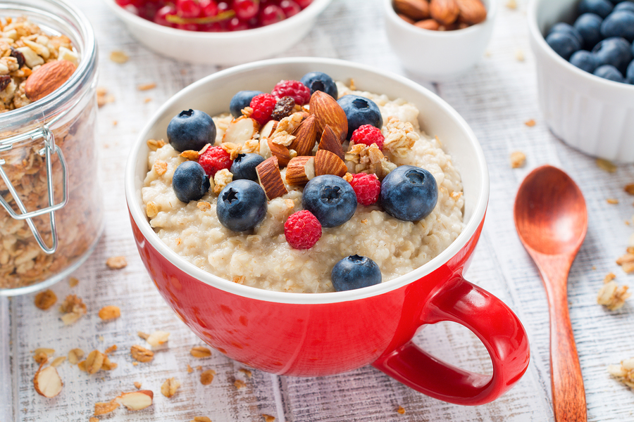

Recetario
Recetas altas en calorias y proteinas para crecimiento muscular.
Tortilla de Avena

Rica en carbohidratos y calorias.
Ingredientes
- Avena instantanea - 50g
- Leche - 100ml
- Banana pisada (o fruta a gusto)
- Crema de mani
- Frutos rojos
Instrucciones
- Tirar la avena y la leche en un bowl.
- Calentar 1 minuto en microondas.
- Pisar la banana y mezclarla en el bowl
(en caso de elegir otra fruta cortarla a gusto).
- Realizar tiras con crema de mani.
- Agregar los frutos rojos elegidos.
- ¡¡A disfrutar!!